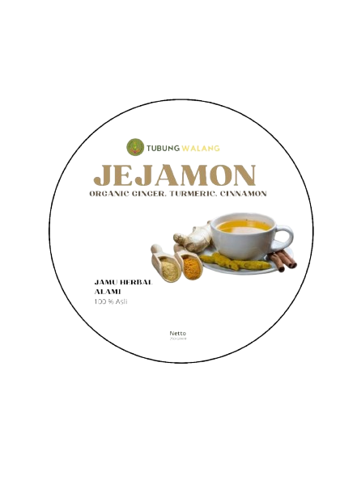
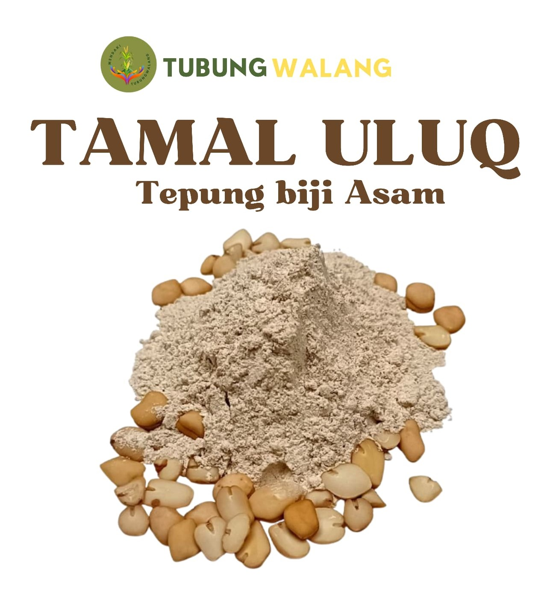
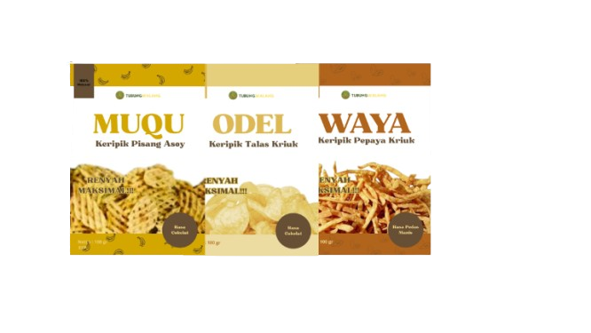
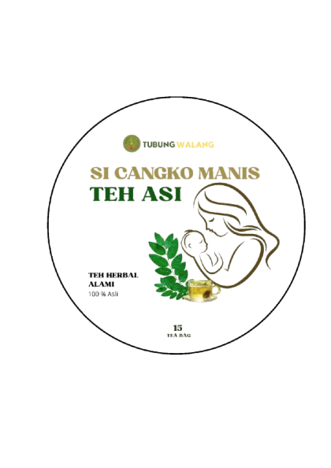
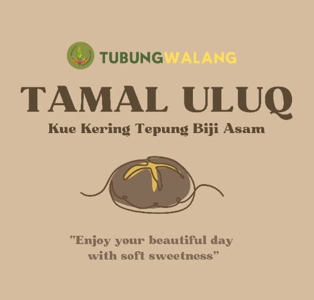
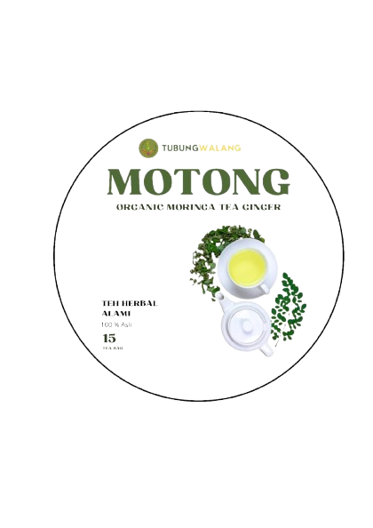

Jejamon
Jejamon, minuman herbal khas Tubungwalang, adalah ramuan hangat dari kayu manis, jahe, kunyit, dan gula aren. Kaya akan antioksidan, Jejamon bermanfaat meningkatkan daya tahan tubuh, meredakan masuk angin, dan melancarkan pencernaan. Nikmati sensasi hangat dan rasa khas rempah-rempahnya setiap saat.

Tamal Uluq
Tamal uluq tepung serbaguna yang diolah dari 100% biji asam alami pilihan tanpa bahan kimia. Tepung ini dibuat tanpa bahan pengawet dan pewarna buatan serta bebas gluten sehingga aman untuk dikonsumsi oleh anda yang memiliki intoleransi gluten. Kandungan alaminya seperti zat besi, kalsium, dan serat menjadikan tepung ini sehat untuk anda konsumsi.

Aneka Keripik
Desa Tubungwalang tidak hanya kaya akan hasil pertanian segar, tetapi juga menawarkan aneka keripik yang lezat. Keripik-keripik ini dibuat dari bahan-bahan alami yang ditanam langsung oleh masyarakat desa. Dengan proses pengolahan yang bersih dan higienis, keripik-keripik ini memiliki rasa yang khas dan renyah, serta aman untuk dikonsumsi.

Teh Asi
Teh ASI adalah minuman herbal alami yang berasal dari desa Tubungwalang, diracik khusus dari daun katuk berkualitas tinggi yang diolah secara tradisional untuk mempertahankan manfaat alaminya. Teh ini dipercaya sebagai pelancar ASI alami bagi ibu menyusui, membantu meningkatkan produksi dan kualitas ASI secara aman dan alami. Kaya akan nutrisi penting seperti vitamin, mineral, dan antioksidan, teh ASI juga mendukung pemulihan pasca-melahirkan dan membantu menjaga daya tahan tubuh. Dengan rasa yang lembut dan menenangkan, teh ini menjadi pilihan tepat untuk mendukung kesehatan ibu sekaligus memastikan kebutuhan bayi terpenuhi secara optimal.

Kue Kering Biji Asam
Ingin merasakan sensasi baru dalam menikmati kue kering? Cobalah Kue Kering Biji Asam! Kue kering ini hadir dengan cita rasa unik dan tekstur yang renyah, berkat penggunaan tepung biji asam sebagai bahan utamanya. Biji asam, yang selama ini seringkali terbuang percuma, kini diolah menjadi tepung yang kaya nutrisi dan memiliki rasa yang khas. Kue Kering Biji Asam ini bukan hanya sekadar camilan, tetapi juga merupakan inovasi dalam dunia kuliner. Perpaduan antara rasa asam alami dari biji asam dengan manisnya gula dan gurihnya mentega menghasilkan cita rasa yang kompleks dan menggugah selera. Teksturnya yang renyah dan lembut di mulut akan membuat Anda ketagihan.

Teh Motong
Teh celup daun kelor "MOTONG" adalah minuman herbal dari desa Tubungwalang yang terbuat dari daun kelor pilihan, diolah secara higienis untuk mempertahankan kandungan nutrisi dan aroma khasnya. Daun kelor kaya akan vitamin C, vitamin A, dan potasium, sehingga baik untuk menjaga kesehatan tubuh. Selain nikmat sebagai minuman, teh ini sudah lama dipercaya sebagai ramuan obat tradisional, membantu meningkatkan daya tahan tubuh dan mendukung pola hidup sehat secara alami.